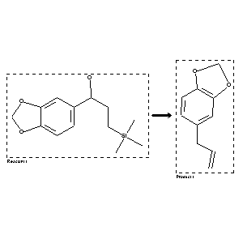

|  |
| FA | RX(1); FLST(1); RX(1) |
Reaction (1 of 1)
| Reaction ID | 2557648 |
| Reactant BRN | 4438102 |
| Reactant | 1-benzo[1,3]dioxol-5-yl-3-trimethylsilanyl-propan-1-ol |
| Product BRN | 136380 |
| Product | 5-allyl-benzo[1,3]dioxole |
| No. of Reaction Details | 1 |
Reaction Details (1 of 1)
| Reaction Classification | Preparation |
| Yield | 43 percent (BRN=136380) |
| Reagent | BF3*AcOH |
| Solvent | CH2Cl2 |
| Time | 5 min |
| Temperature | 25 |
| Citation Pointer | 5570012; Journal; Wilson, Stephen R.; Shedrinsky, Alexander; JOCEAH; J.Org.Chem.; EN; 47; 10; 1982; 1983-1984; |
Reference (1 of 1)
| Citation Number | 5570012 |
| Document Type | Journal |
| Authors | Wilson, Stephen R.; Shedrinsky, Alexander |
| CODEN | JOCEAH |
| Journal Title | J.Org.Chem. |
| Language Code | EN |
| (Series) Volume | 47 |
| Number | 10 |
| Publication Year | 1982 |
| Page | 1983-1984 |